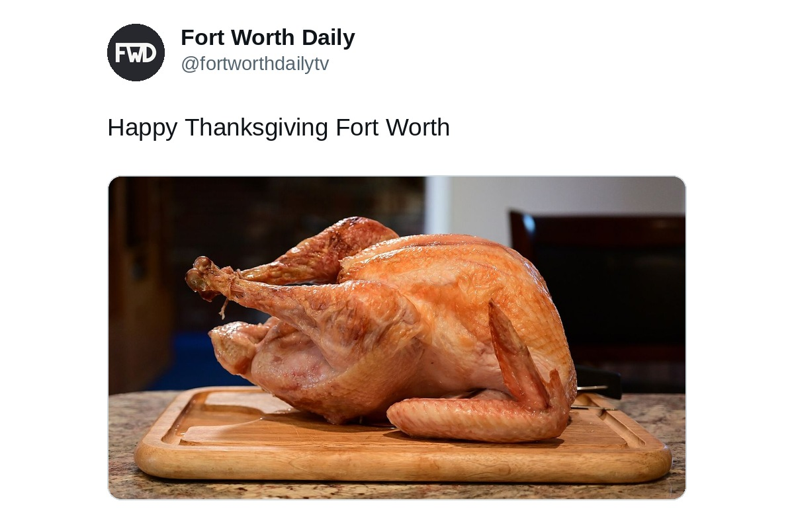

Happy Thanksgiving Fort Worth

👍 ❤️ 😮 ✅ written to disk (dry run)
story + scoring
{
"source": "Fort Worth Texas TV",
"kind": "culture",
"score": 1.7944,
"relevance": 2,
"url": "",
"image_license": "wikimedia-cc",
"image_credit": "Photo: slgckgc via Wikimedia Commons (CC BY 2.0)"
}A "festive chill" is keeping North Texas bundled up in layers this Thanksgiving, with gusty winds making afternoon highs feel even colder. Clear skies and mostly calm winds overnight cooled down the region.
Morning temperatures hovered just above freezing, sitting at 35 degrees at DFW, 33 at Lake Ray Roberts, 35 in Plano, 36 at Cedar Creek and 37 at Lake Tawakoni. Sunshine will help temperatures reach an afternoon high of 53 degrees.
👍 ❤️ 😮 ✅ written to disk (dry run)
story + scoring
{
"source": "FOX 4 Dallas-Fort Worth",
"kind": "rss",
"score": 1.1042,
"relevance": 2,
"url": "https://www.fox4news.com/weather/dallas-weather-breezy-near-freezing-festive-chill-grips-north-texas-thanksgiving",
"image_license": "card",
"image_credit": "Card: FWD"
}Arlington police are looking for Ezequiel MONTEMAYOR, wanted for theft. Crime Stoppers is offering up to $2,000 for information leading to an arrest.
Call 817-469-TIPS (8477) or submit a tip at 469tips.com. You stay anonymous.
👍 ❤️ 😮 ✅ written to disk (dry run)
story + scoring
{
"source": "Arlington Police Department",
"kind": "wanted",
"score": 0.7655,
"relevance": 1,
"url": "https://www.arlingtontx.gov/City-Services/Public-Safety/Police-Department/Police-Programs/Cash-for-Crooks/Wanted-Fugitives",
"image_license": "official",
"image_credit": "Photo: Arlington Police Department"
}